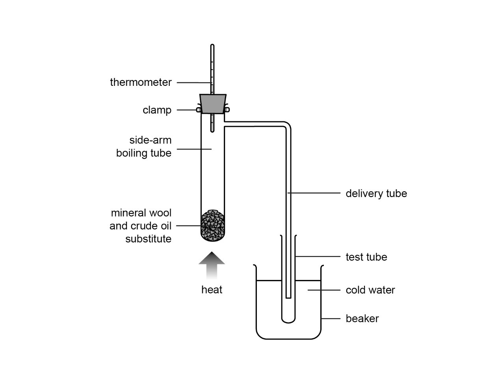

Worksheets will need to be printed for students in advance of the lesson.
While all care is taken to ensure resource content is in line with cultural sensitivities, please be aware that it should be reviewed before sharing with students.
Ideas about crude oil
Give each table or group of students a piece of A3 paper and a coloured pen (a different
colour for each table/group).
Give groups 1 minute to write one thing they can recall about crude oil.
After 1 minute, tell students: Now pass your paper to the next group and on the
paper you receive, you have 2 minutes to add ticks if you agree with the existing
statements, or add crosses and make amendments if you disagree with them. Then add a
new statement of your own and pass the paper to the next group.
This continues until the paper returns to its original group for the students to
discuss. Groups then feed back to the class.
To help some students, give an example, e.g., crude oil is a complex mixture of
hydrocarbons.
Trends in physical properties of hydrocarbons
This lesson builds on the previous lesson’s work on fractional distillation (Lesson 73) and
has two distinct areas for students to develop their knowledge and understanding:
how fractions differ from each other
the different fractions and their typical uses.
Display Slide 1 of the slideshow.
Tell students:
In the previous lesson you learned how the boiling point altered with the size
of the hydrocarbon.
This is not the only physical property that changes because of forces of
attraction between molecules.
Display Slide 2.
Tell students:
The image shows the trends of the main physical properties. The colour of
the liquids becomes darker as the hydrocarbon molecules get bigger.
You will learn more about the uses of the fractions later in this
lesson.
Different fractions have different uses because they have different
properties. For example:
the hydrocarbons in the refinery gases fraction have the lowest
viscosity (they flow easily) and are easiest to ignite (set alight),
making them suitable for use as fuels
bitumen is solid at room temperature and is waterproof, making it suitable
for surfacing roads and roofs.
Provide students with mini whiteboards or pieces of paper.
Leave Slide 2 displayed and ask students the following questions:
Which fraction contains the smallest number of carbon atoms in its
molecules? (Answer: Refinery gases)
Which fraction has the highest boiling point? (Answer: Bitumen)
What is the trend in ease of ignition of the fractions as you go from top to
bottom of the column? (Answer: The fractions become more difficult to
ignite as you go down the column.)
What is the trend in viscosity of the fractions as you go from top to bottom of
the column? (Answer: The fractions become more viscous as you go down the
column.)
Students should write their answers large enough to be easily read while scanning the
room. Discuss answers provided by students using the diagram on the slide.
Demonstration practical: Separating crude oil
It is possible to carry out a teacher demonstration involving fractional distillation of a
crude oil substitute which includes testing the viscosity and ease of ignition of fractions.
The demonstration must only be done by the teacher and using a crude oil substitute.
The demonstration must be practised prior to carrying out the experiment in front of
students.
eye protection
side-arm boiling tube
thermometer in a bung (0–350 °C)
delivery tube
four test tubes with stoppers
test-tube rack
250 cm3 beaker
stand, boss and clamp
Bunsen burner
heat-resistant mat
dropping pipette
watch glass
splints
glass rod
mineral wool
crude oil substitute
Distilling the crude oil substitute
Use a glass rod to push a small ball of mineral wool into the bottom of the
boiling tube. Add approximately 2 cm3 of crude oil substitute using
the dropping pipette. Set up the apparatus as shown in the diagram. Make sure
everything is secure before starting heating.

Gently heat the bottom of the boiling tube using a small blue flame. Check the
thermometer to make sure the temperature does not go above 100 °C. Liquid
should collect in the test tube. When this stops, replace the test tube with a
fresh one, and stopper the tube of liquid. Repeat the previous step three times,
heating the boiling tube to about 150 °C, then to about 200 °C
and finally to about 250 °C.
The last step requires careful control of the Bunsen burner flame to increase
and maintain the temperature. The cold water in the beaker will gradually warm
up and will need replacing with fresh cold water.
Testing the fractions
Record the colour of each fraction. Gently shake the tubes and rate the
viscosity of each fraction, from 1 (least viscous or ‘runniest’) to
4 (most viscous or ‘thickest’). Rate the ease of ignition of each
fraction. Pour a little of each fraction onto the watch glass and
ignite it with the flame from a burning splint. Rate the fractions from 1 (most
easily ignited) to 4 (least easily ignited).
Wear eye protection.
Avoid breathing the vapours formed.
Be careful with hot apparatus – let it cool down fully before tidying
away.
Ensure a 0–350 °C thermometer is used for this demonstration.
If a 0–100 °C thermometer is used, it will explode as the
temperature increases beyond 100 °C.
Task 1: Separating crude oil demonstration
Hand out Worksheet 1, which students will use to observe, record and
evaluate the results of your teacher demonstration.
Task 2: Fractional distillation
OPTIONAL: Task 2 is an optional card sort activity that can be used as an alternative
activity to the Demonstration practical:Separating crude
oil.
Ask students to complete Worksheet 2.
Students match fractions to their exit position from a fractionating column, then match
the uses to the fractions.
You might need to help them with the uses as this will be covered in Teaching
session 2. The fraction cards have two different versions, one set with
approximate ranges of carbon atoms per molecule and boiling points and one set without.
Remove the cards showing the carbon atoms and boiling points for students not needing
this level of support.
Support
For students who struggle with Trends in physical properties of
hydrocarbons:
In Teaching session 1, for Demonstration practical: Separating
crude oil, ensure students are clear on the meanings of the terms:
‘viscosity’ (how thick or runny a liquid is; low viscosity is runny and high
viscosity is thick) and ‘ignition’ (how easy it is for something to start to
burn/combust.)
In Student work 1, for Worksheet 2, ensure students
use the cards with the boiling point ranges included with the fraction name.
Uses of fractions
Display the Image: Fractional distillation.
Tell students:
The fractions produced by fractional distillation of crude oil have
different uses depending on their properties.
The image shows the names and uses of the main fractions leaving an oil
fractionating column.
Use the image to help explain the uses of each fraction.
Tell students:
Refinery gases are sometimes called LPG (liquid petroleum gas). This
fraction is a mixture of methane, ethane, propane and butane. The gases are
used in domestic heating and cooking.
Gasoline (petrol) is used as a fuel in cars. It ignites easily and is highly
flammable. These properties are useful in cars when acceleration is needed
so a lot of energy is required in a short space of time.
Kerosene is sometimes called aviation fuel as it is used for jet aircraft.
In homes it is used as ‘paraffin’ for small heaters and lamps.
It is less volatile and flammable than petrol.
Diesel is mainly used as a fuel, typically for buses and lorries, but
some cars and railway engines also use diesel. It can also be converted to
other substances using a process called cracking.
Fuel oil is used as a fuel for ships and sometimes for heating. It burns
steadily, does not evaporate easily and is safe to store. It is selected for
uses where storing of a fuel source is required because it might be
difficult to replenish supplies, such as on a ship at sea or near remote houses or
schools.
Bitumen is combined with small rock chips and used as a surface for roads or
as a roofing material. It is used for these purposes as it forms a thick,
tough and waterproof layer.
Ask students the following questions. They should write their answers in their exercise
books. Take a selection of answers before providing them with each answer.
Explain the properties of gasoline (petrol) that make it suitable for use as a
fuel in cars.
(Answer: Gasoline (petrol) is a liquid with a low viscosity, so it easily flows from the
petrol pump into the car and around the car engine. It has a low boiling point, so it
evaporates easily and is easy to ignite to start the car engine.)
Describe the relationship between the number of carbon atoms in the molecules in
the fractions and the boiling point, ease of ignition and viscosity of the
fractions.
(Answer: As the number of carbon atoms increases:
the boiling point of the fraction increases
the fractions become more difficult to ignite
the viscosity of the fractions increases.)
Describe the properties of kerosene that make it suitable for use as an aircraft
fuel.
(Answer: It is fairly easy to ignite; medium viscosity/flows fairly easily.)
Use of fractions
Hand out Worksheet 3 and ask students to complete it in pairs.
Students should use the mark scheme in the Answer
sheet to self-assess. Only hand out the answers when students have
completed the worksheet.
Ensure students have the correct answers to Q2 as this summarises the
main uses of each fraction, which is a specification point.
Support
For students who struggle with Use of fractions, they can use
Worksheet 4, which is an optional version of Worksheet 3 with
additional hints for each question. In Q1 students are told how many
options to select. In Q2, the answers have spaces that match the
missing words. Each of the answers to Q3 are started off to help
students formulate their answers.
Challenge students to answer the following question. They can write their answers at the
bottom of Worksheet 3. You can either give them the answer, or they can hand their
answers in for marking and return next lesson.
Gasoline and fuel oil are different fractions that can be separated from crude
oil. Describe the difference in one physical property between these two
fractions.
(Answer: A physical property is given with a difference described, e.g.,
number of hydrogen and carbon atoms in molecules is lower in gasoline
boiling point is lower in gasoline
ease of ignition is easier in gasoline
viscosity is lower in gasoline.)
The opposite answers for fuel oil are also acceptable, e.g.,
number of hydrogen and carbon atoms in molecules is higher in fuel oil.
Display Question 1.
Ask students to work on their own to complete the question in their exercise books.
Allow 2–3 minutes.
Ask students to swap over their books with their partner.
Display Question 1 answer and ask students to use it to mark each
other’s work.
Before returning the exercise books, ask students to consider the answer which they have
marked. Ask students to add a WWW (What Went Well) comment to praise their partner and
an EBI (Even Better If) to help their partner improve their answer.
Hand out the Homework sheet, which contains questions covering material
from this lesson.
Students will need graph paper to complete Q3.
Q1 covers fractions.
Q2 covers uses of fuel oil and diesel.
Q3 covers using data to plot a graph, making predictions and applying
knowledge of hydrocarbons to a new context.
Alternative activities
These resources can be used if you are splitting the content of this lesson into two sessions.
Recalling fractions
Ask students to work in pairs using paper or mini whiteboards to produce a mnemonic for
the fractions obtained from crude oil, from either bottom to top, or top to bottom, of
the fractionating column.
Allow students 5 minutes – this activity can be harder to complete than first
imagined. Ask students to compare their answers with another pair, then feed back to the
class.
Students can then choose a mnemonic they find memorable and write it in their exercise
books to help with later revision.
If any students are struggling, give them an example, such as Red Goats Keep Dropping
Fish Badly (top to bottom).
Confidence rating
Display Slide 1 of the Slideshow: Learning objectives.
Give the students 3–4 minutes to rate their confidence on each objective using a
scale of 1 to 3 where 1 is not confident, 2 is unsure in places and 3 is confident.
Ask students to discuss their ratings with a partner. Walk round the class and discuss
the ratings with a random selection of students, taking a note of any students who still
seem unsure.